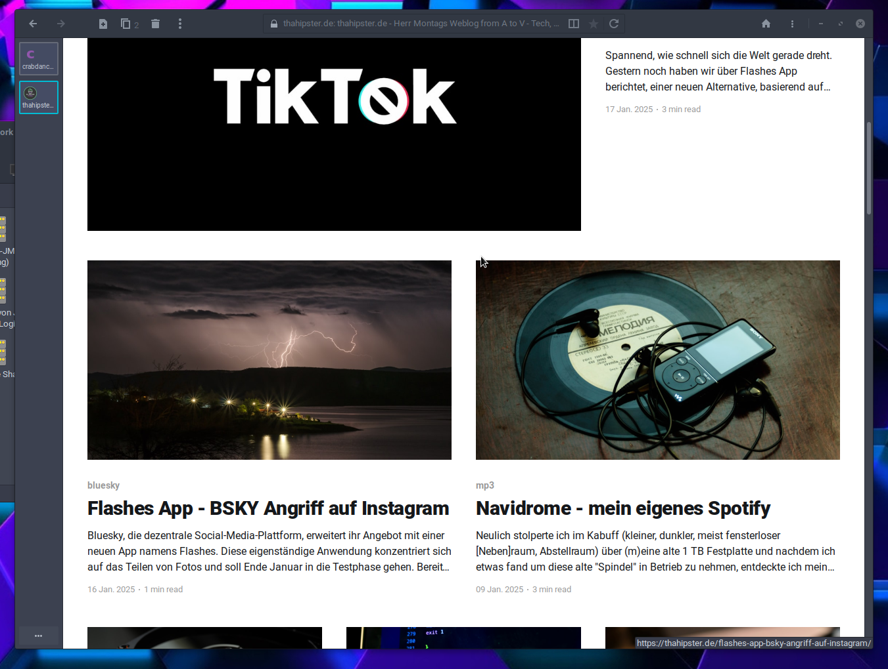

Fienix Linux for PPC Computers
The other day I stumbled across Fienix Linux. It is a Distribution maintained by one man, Casey Cullen. It is based on debian, but with focus on powerpc first. I just tried to install it on my Powermac G5. And it works great!
 Fienix Linux 6.0.1 on my Powermac G5, on real Hardware.
Fienix Linux 6.0.1 on my Powermac G5, on real Hardware.
My Setup in this machine as follows:
- Powermac G5 2x2Ghz 11,2
- 12 GB Ram
- 1 TB NVMe-SSD
- Cinema Display 23"
- Geforce 6600GS
I installed Grub on an internal SSD because Open Firmware is too old to boot from NVME directly. So GRUB starts from that internal SSD and boots the Linux Distros which resides on the NVMe-SSD. Because the Linux Kernel has the drivers for NVME. There are a lot of different Partitions:
- 64 GB SWAP Drive :-)
- Debian SID
- T2/Linux
- Adiele Linux
- Fienix Linux
As I can say Fienix Linux is running the best. All other experiences with Linux on PowerPC G5 were not so good. There is 3D-Acceleration which makes it really snappy to work in a Windows Manager like XFCE. There are modern Browsers like EOLIE (which is Safari Webkit) and with it you can access the modern web nearly without problems. You have sealion or arcticfox. All of them are good web browers too. And they all work. With Debian SID on PPC64 I was unable to run EOLIE. And via T2 Linux because of another ELF Format, I was unable to run a binary from Sealion and selfcompiling did not work because of other broken packages.
The only problem I experienced is a lack with the update servers, the apt sources. These are special Casey Cullen sources and they were dead as I tried. So there is now way to update the pakages or to install new software. I hope there are alternative servers / sources or the main ones come back. I asked Casey via youtube directly, hopefully he read it.
Keep up the good work, best Linux Distro for PPC64 so far.
Reminder for myself:
username: fienix
password: fienixPW
root password: rootAdminPW
[UPDATE] Eolie Webbrowser is even capable to display and render my complex Ghost Weblog over there at thahipster.de and this is the first time this happens on a PPC64 Linux. Really great!
 thahipster.de Ghost CMS Weblog rendered with EOLIE on Fienix Linux
Ressoources
Tags: powermacg5, linux, ppc64, eolie, browser, fienix